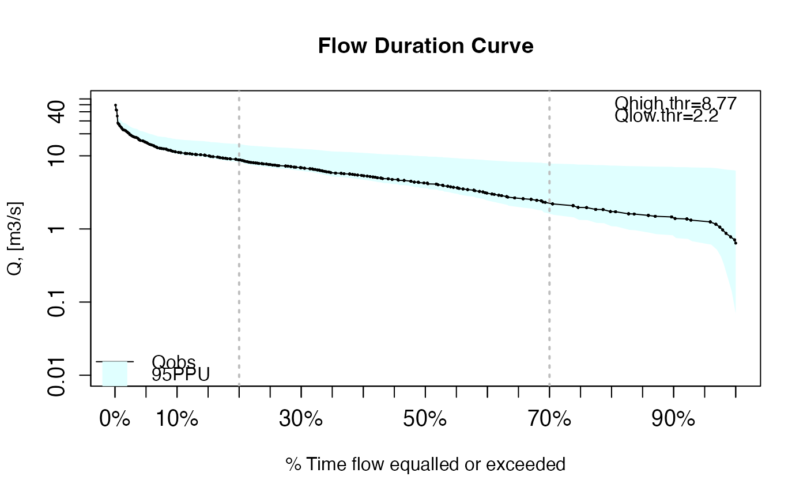

Flow Duration Curve with uncertainty bounds.
fdcu.RdComputes and plots the Flow Duration Curve (FDC) for the streamflows given by x and for two uncertainty bounds, with the possibility of plotting an additional FDC representing simulated streamflows for x, in order to compare them.
Usage
fdcu(x, lband, uband, ...)
# Default S3 method
fdcu(x, lband, uband, sim=NULL, lQ.thr=0.7, hQ.thr=0.2, plot=TRUE, log="y",
main="Flow Duration Curve", xlab="% Time flow equalled or exceeded",
ylab="Q, [m3/s]", ylim, yat=c(0.01, 0.1, 1), xat=c(0.01, 0.025, 0.05),
col=c("black", "red"), pch=c(1, 15), lwd=c(1, 0.8), lty=c(1, 3), cex=0.2,
cex.axis=1.2, cex.lab=1.2, leg.txt= c("Qobs", "Qsim", "95PPU"),
leg.cex=1, leg.pos="auto", verbose= TRUE, thr.shw=TRUE, border=NA,
bands.col="lightcyan", bands.density=NULL, bands.angle=45, new=TRUE, ...)
# S3 method for class 'matrix'
fdcu(x, lband, uband, sim=NULL, lQ.thr=0.7, hQ.thr=0.2, plot=TRUE, log="y",
main="Flow Duration Curve", xlab="% Time flow equalled or exceeded",
ylab="Q, [m3/s]", ylim, yat=c(0.01, 0.1, 1), xat=c(0.01, 0.025, 0.05),
col=matrix(c(rep("black", ncol(x)),
palette("default")[2:(ncol(x)+1)]), byrow=FALSE, ncol=2),
pch=matrix(rep(c(1, 15), ncol(x)), byrow=TRUE, ncol=2),
lwd=matrix(rep(c(1, 0.8), ncol(x)), byrow=TRUE, ncol=2),
lty=matrix(rep(c(1, 3), ncol(x)), byrow=TRUE, ncol=2),
cex=rep(0.1, ncol(x)), cex.axis=1.2, cex.lab=1.2,
leg.txt=c("OBS", colnames(x), "95PPU"), leg.cex=1, leg.pos="auto",
verbose= TRUE, thr.shw=TRUE, border=rep(NA, ncol(x)),
bands.col=rep("lightcyan", ncol(x)), bands.density=rep(NULL, ncol(x)),
bands.angle=rep(45, ncol(x)), new=TRUE, ...)
# S3 method for class 'data.frame'
fdcu(x, lband, uband, sim=NULL, lQ.thr=0.7, hQ.thr=0.2, plot=TRUE, log="y",
main="Flow Duration Curve", xlab="% Time flow equalled or exceeded",
ylab="Q, [m3/s]", ylim, yat=c(0.01, 0.1, 1), xat=c(0.01, 0.025, 0.05),
col=matrix(c(rep("black", ncol(x)),
palette("default")[2:(ncol(x)+1)]), byrow=FALSE, ncol=2),
pch=matrix(rep(c(1, 15), ncol(x)), byrow=TRUE, ncol=2),
lwd=matrix(rep(c(1, 0.8), ncol(x)), byrow=TRUE, ncol=2),
lty=matrix(rep(c(1, 3), ncol(x)), byrow=TRUE, ncol=2),
cex=rep(0.1, ncol(x)), cex.axis=1.2, cex.lab=1.2,
leg.txt=c("OBS", colnames(x), "95PPU"), leg.cex=1, leg.pos="auto",
verbose= TRUE, thr.shw=TRUE, border=rep(NA, ncol(x)),
bands.col=rep("lightcyan", ncol(x)), bands.density=rep(NULL, ncol(x)),
bands.angle=rep(45, ncol(x)), new=TRUE, ...)
<!-- %% \method{fdcu}{zoo}(x, lband, uband, sim=NULL, lQ.thr=0.7, hQ.thr=0.2, plot=TRUE, log="y", -->
<!-- %% main="Flow Duration Curve", xlab="\% Time flow equalled or exceeded", -->
<!-- %% ylab="Q, [m3/s]", ylim, yat=c(0.01, 0.1, 1), xat=c(0.01, 0.025, 0.05), -->
<!-- %% col=matrix(c(rep("black", NCOL(x)), -->
<!-- %% palette("default")[2:(NCOL(x)+1)]), byrow=FALSE, ncol=2), -->
<!-- %% pch=matrix(rep(c(1, 15), NCOL(x)), byrow=TRUE, ncol=2), -->
<!-- %% lwd=matrix(rep(c(1, 0.8), NCOL(x)), byrow=TRUE, ncol=2), -->
<!-- %% lty=matrix(rep(c(1, 3), NCOL(x)), byrow=TRUE, ncol=2), -->
<!-- %% cex=rep(0.1, NCOL(x)), cex.axis=1.2, cex.lab=1.2, -->
<!-- %% leg.txt=c("OBS", colnames(x), "95PPU"), leg.cex=1, leg.pos="auto", -->
<!-- %% verbose= TRUE, thr.shw=TRUE, border=rep(NA, NCOL(x)), -->
<!-- %% bands.col=rep("lightcyan", NCOL(x)), bands.density=rep(NULL, NCOL(x)), -->
<!-- %% bands.angle=rep(45, NCOL(x)), new=TRUE, ...) -->Arguments
- x
numeric, zoo, data.frame or matrix object with the observed streamflows for which the flow duration curve have to be computed.
Measurements at several gauging stations can be stored in a data.frame of matrix object, and in that case, each column ofxrepresent the time series measured in each gauging station, and the column names ofxhave to correspond to the ID of each station (starting by a letter). Whenxis a matrix or data.frame, the flow duration curve is computed for each column.- lband
numeric, zoo, data.frame or matrix object with the streamflows representing the the lower uncertainty bound of
x, for which the flow duration curve have to be computed.
Measurements at several gauging stations can be stored in a data.frame of matrix object. Whenlbandis a matrix or data.frame, the flow duration curve is computed for each column.- uband
numeric, zoo, data.frame or matrix object with the streamflows representing the the upper uncertainty bound of
x, for which the flow duration curve have to be computed.
Measurements at several gauging stations can be stored in a data.frame of matrix object. Whenubandis a matrix or data.frame, the flow duration curve is computed for each column.- sim
OPTIONAL.
numeric, zoo, data.frame or matrix object with the streamflows simulated forx, for which the flow duration curve have to be computed.
Measurements at several gauging stations can be stored in a data.frame of matrix object. Whensimis a matrix or data.frame, the flow duration curve is computed for each column.- lQ.thr
numeric, low flows separation threshold. If this value is different from 'NA', a vertical line is drawn in this value, and all the values to the left of it are deemed low flows.
- hQ.thr
numeric, high flows separation threshold. If this value is different from 'NA', a vertical line is drawn in this value, and all the values to the right of it are deemed high flows
- plot
logical. Indicates if the flow duration curve should be plotted or not.
- log
character, indicates which axis has to be plotted with a logarithmic scale. Default value is y.
- main
- xlab
- ylab
- ylim
See
plot.default. The y limits of the plot.- yat
Only used when
log="y".
numeric, with points at which tick-marks will try to be drawn in the Y axis, in addition to the defaults computed by R. See theatargument inAxis.- xat
Only used when
log="x".
numeric, with points at which tick-marks will try to be drawn in the x axis, in addition to the defaults computed by R. See theatargument inAxis.- col
See
plot.default. The colors for lines and points. Multiple colors can be specified so that each point can be given its own color. If there are fewer colors than points they are recycled in the standard fashion. Lines will all be plotted in the first colour specified.- pch
See
plot.default. A vector of plotting characters or symbols: seepoints.- lwd
See
plot.default. The line width, seepar.- lty
See
plot.default. The line type, seepar.- cex
See
plot.default. A numerical vector giving the amount by which plotting characters and symbols should be scaled relative to the default. This works as a multiple ofpar("cex"). 'NULL' and 'NA' are equivalent to '1.0'. Note that this does not affect annotation.- cex.axis
magnification of axis annotation relative to 'cex'.
- cex.lab
Magnification to be used for x and y labels relative to the current setting of 'cex'. See '?par'.
- leg.txt
vector with the names that have to be used for each column of
x.- leg.cex
numeric, indicating the character expansion factor for the legend, *relative* to current
par("cex"). Default value = 1- leg.pos
keyword to be used to position the legend. One of the list ‘"bottomright", "bottom", "bottomleft", "left", "topleft", "top", "topright", "right", "center"’. This places the legend on the inside of the plot frame at the given location. See
legend.
Whenleg.pos="auto", the legend provided byleg.txtis located on the ‘bottomleft’ whenlog="y"and on the ‘topright’ otherwise- verbose
logical; if TRUE, progress messages are printed
- thr.shw
logical, indicating if the streamflow values corresponding to the user-defined thresholds
lQ.thrandhQ.thrhave to be shown in the plot.
Whenleg.pos="auto", the legend with the threshold values is located on the ‘topright’ whenlog="y"and on the ‘bottomleft’ otherwise- border
See
polygon. The color to draw the border of the polygon with the uncertainty bounds. The default, 'NA', means to omit borders.- bands.col
See
polygon. The color for filling the polygon. The default, 'NA', is to leave polygons unfilled, unlessbands.densityis specified. Ifbands.densityis specified with a positive value this gives the color of the shading lines.- bands.density
See
polygon. The density of shading lines for the polygon with the uncertainty bounds, in lines per inch. The default value of 'NULL' means that no shading lines are drawn. A zero value ofbands.densitymeans no shading nor filling whereas negative values (and 'NA') suppress shading (and so allow color filling).- bands.angle
See
polygon. The slope of shading lines for the polygon with the uncertainty bounds, given as an angle in degrees (counter-clockwise).- new
logical, if TRUE, a new plotting window is created.
- ...
further arguments passed to or from other methods (to the plotting functions)
References
Vogel, R., and N. M. Fennessey (1994), Flow duration curves I: A new interpretation and confidence intervals, ASCE, Journal of Water Resources Planning and Management, 120(4).
Vogel, R., and N. Fennessey (1995), Flow duration curves II: A review of applications in water resources planning, Water Resources Bulletin, 31(6), 1029-1039, doi:10.1111/j.1752-1688.1995.tb03419.x.
Yilmaz, K. K., H. V. Gupta, and T. Wagener (2008), A process-based diagnostic approach to model evaluation: Application to the NWS distributed hydrologic model, Water Resour. Res., 44, W09417, doi:10.1029/2007WR006716.
Author
Mauricio Zambrano-Bigiarini, mzb.devel@gmail
Note
If you do not want to use logarithmic scale for the streamflow axis, you can do it by passing the log=" " to the ... argument.
Examples
## Loading daily streamflows at the station Oca en Ona (Ebro River basin, Spain) ##
data(OcaEnOnaQts)
q <- OcaEnOnaQts
# Creating a fictitious lower uncertainty band
lband <- q - min(q, na.rm=TRUE)
# Giving a fictitious upper uncertainty band
uband <- q + mean(q, na.rm=TRUE)
# Plotting the flow duration curve corresponding to 'q', with two uncertainty bounds
fdcu(q, lband, uband)
#> [Warning: all 'lband' equal to zero will not be plotted]
